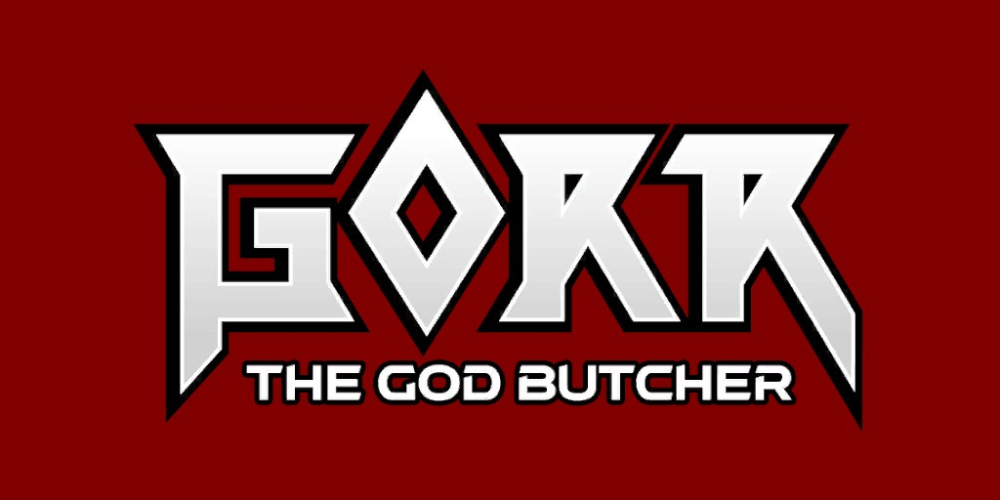
Gorr (Terre-616)
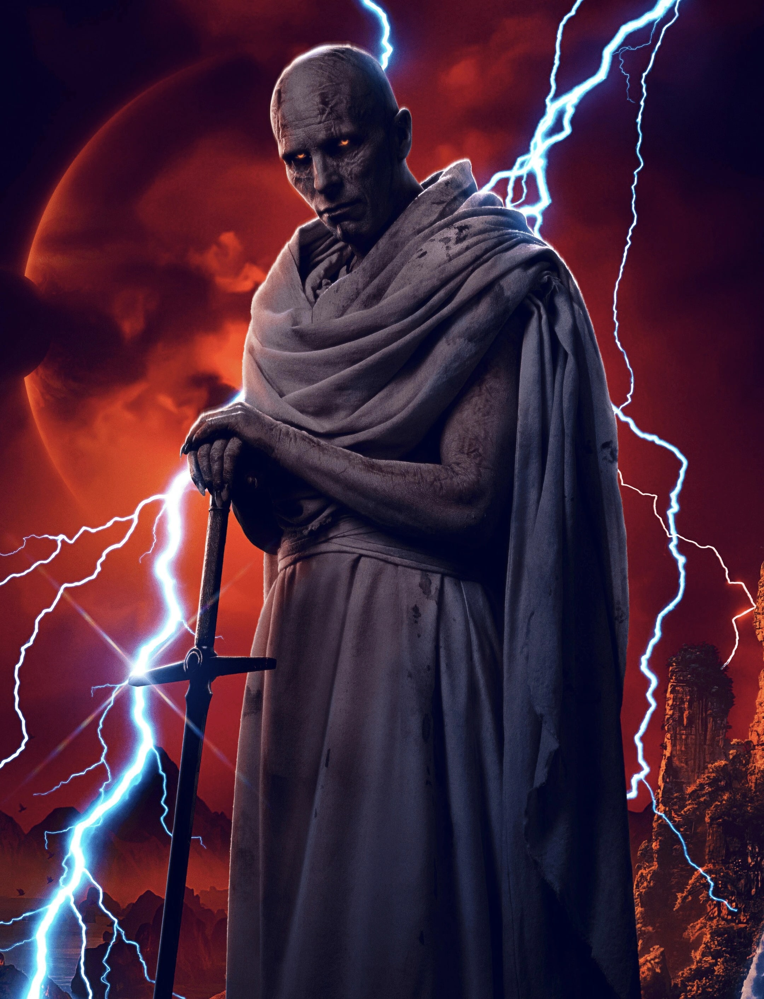
Origines :
Gorr est un extraterrestre né sur une planète sans nom, peuplé par un peuple autochtone vénérant des dieux qu'ils n'avaient jamais vus.
Sa mère trouva la mort alors qu'il était encore enfant, en le protégeant de bêtes féroces et il se retrouva seul à errer.
Des années plus tard, il fonda une famille, mais sa femme enceinte fut tuée dans un éboulement et ses enfants moururent de faim.
Malgré les croyances de son peuple, qui exigeaient que les corps des défunts soient pendus aux arbres afin que les dieux les voient et les emmène, Gorr décida d'enterrer son enfant, ce qui lui valu d'être lapidé et chassé.
Dévasté, il crut pendant un temps que les dieux qu'ils vénéraient n'existaient pas, jusqu'à ce que deux d'entre eux, un dieu de lumière et un dieu d'ombre s’entretuent et tombent à ses pieds.
Il récupéra un fragment tranchant des mains de l'un d'eux, et décida alors de tuer tous les dieux pour se venger de leur silence quand il avait besoin d'eux.
La Nécrolame fusionna dès lors avec lui et le transforma profondément, pour en faire l'égal des dieux.
Il passa près de 2000 ans à parcourir la galaxie et tuer des panthéons entiers jusqu'à ce qu'il fasse la rencontre de Thor à la fin du IXème siècle, sur Terre, où il venait tuer un dieu slave.
Un affrontement sanglant se déclencha entre le Dieu du Tonnerre et le Tueur de Dieux, qui se termina par une défaite mutuelle provoqué par un éclair d'un Thor au bord de la mort, et Gorr fuit se mettre à l'abri.
Après plusieurs jours de coma, Thor se réveilla et retrouva son ennemi mortel au fond d'une grotte, mais il fut capturé et torturé.
Libéré et aidé par des Vikings, Thor lui trancha le bras.
Il pensait l'avoir tué, mais Gorr survécut et passa le millénaire suivant à tuer d'autres dieux à travers les galaxies.
Il utilisa l'énergie de la Nécrolame pour créer des doubles de sa femme et de son fils, à qui il cacha ses plans.
A l'époque moderne, Thor découvrit que des panthéons avaient disparu et réalisa que Gorr n'était pas mort.
Ce dernier tua les dieux temporels de la planète Chronux et utilisa leur sang pour ouvrir un passage jusqu'au premier dieu de l'existence et lui arracha le cœur.
Refaçonnant le flux temporel, il tua tous les dieux existants, ne laissant vivre que Thor (devenu roi d'Asgard et dernier dieu vivant dans un futur lointain).
Ce Roi Thor fut ensuite rejoint par le Thor actuel (celui du présent, également nommé Thor l'Avenger).
Alors que le Thor du passé fut fait esclave et captif de Gorr aux côtés de nombreux dieux, il contraint de construire une bombe divine.
Alors qu'il montait une rébellion avec d'autres dieux-esclaves, il essaya de détruire la bombe avec un fragment d'étoile mais fut projeté hors de la planète, où il fut retrouvé par Thor l'Avenger et le Roi Thor.
Le trio affronta Gorr, mais ce dernier était trop puissant et ils furent mis en échec.
Il les laissa pour morts et partit activer la bombe divine, censée tuer simultanément l'intégralité des dieux à travers l'espace-temps.
Alors que sa femme l'apprit et l'appela « Dieu », il enragea et la tua de ses propres mains, juste avant que son fils ne l'interpelle car il cherchait sa mère.
Gorr, pris de court, lui dit qu'elle se trouvait probablement dans les tours, avant de se détourner pour achever son plan.
Toutefois, son fils Agar tomba nez-à-nez avec le corps sans vie de sa mère, enfouie sous le sable, et comprit les véritables intentions de son « père », qui lui avait toujours caché la vérité.
Il décida alors d'aider l'Avenger Thor.
Rechargé par les prières du jeune adolescent et l'énergie des dieux survivants, Thor absorba l'explosion de la bombe grâce aux deux Mjölnir et de la Necrolame, et les Thors combattirent Gorr dans un dernier affrontement, et réussirent à le vaincre.
C'est le Thor du passé qui porta le coup fatal.
On apprendra bien plus tard que le Dieu de l'ombre auquel Gorr a volé son arme est en réalité le dieu Knull, le Dieu des symbiotes, et que cette Necrolame était en fait le premier symbiote créé par Knull.
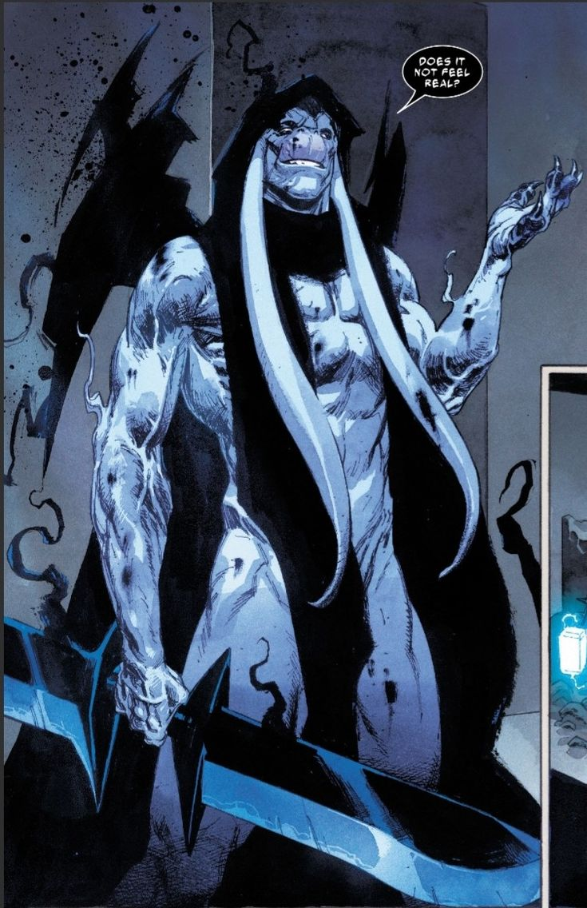
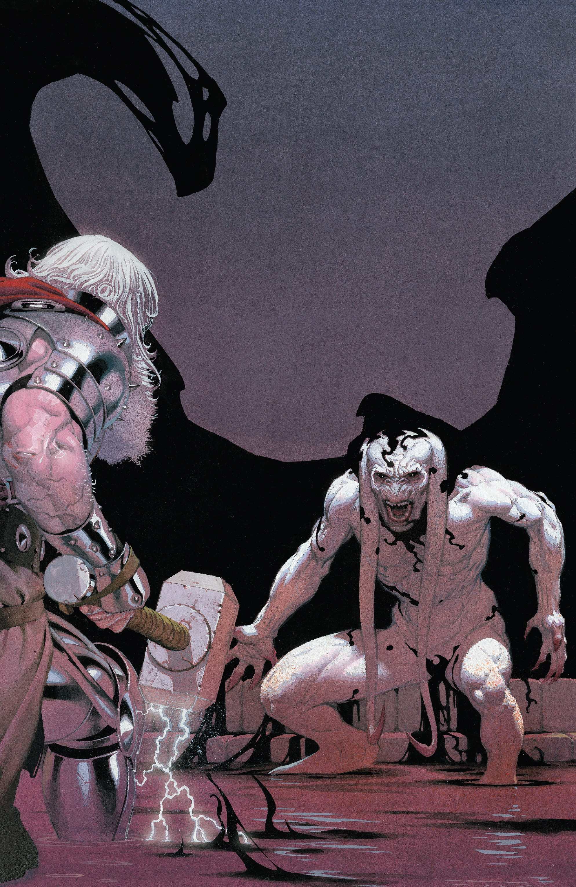
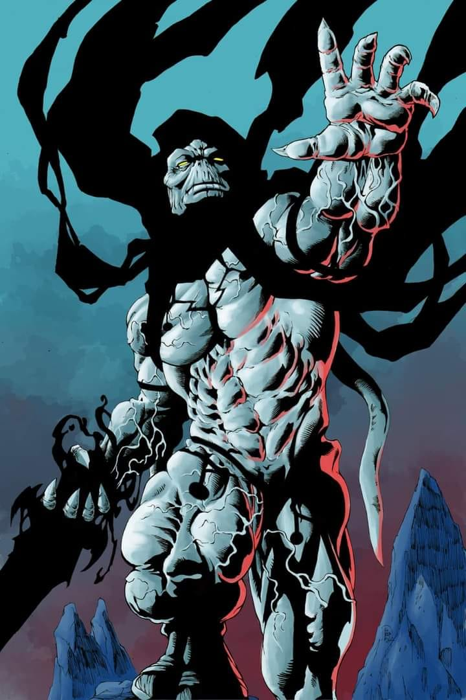

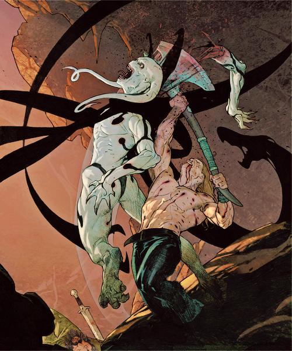
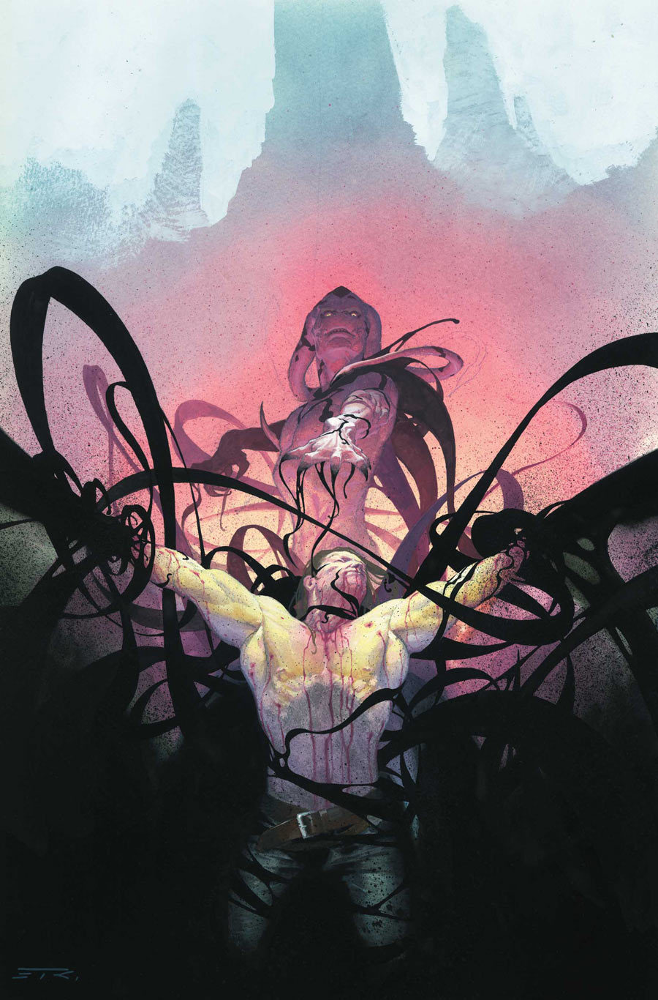

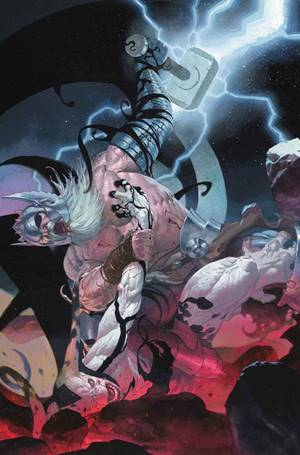
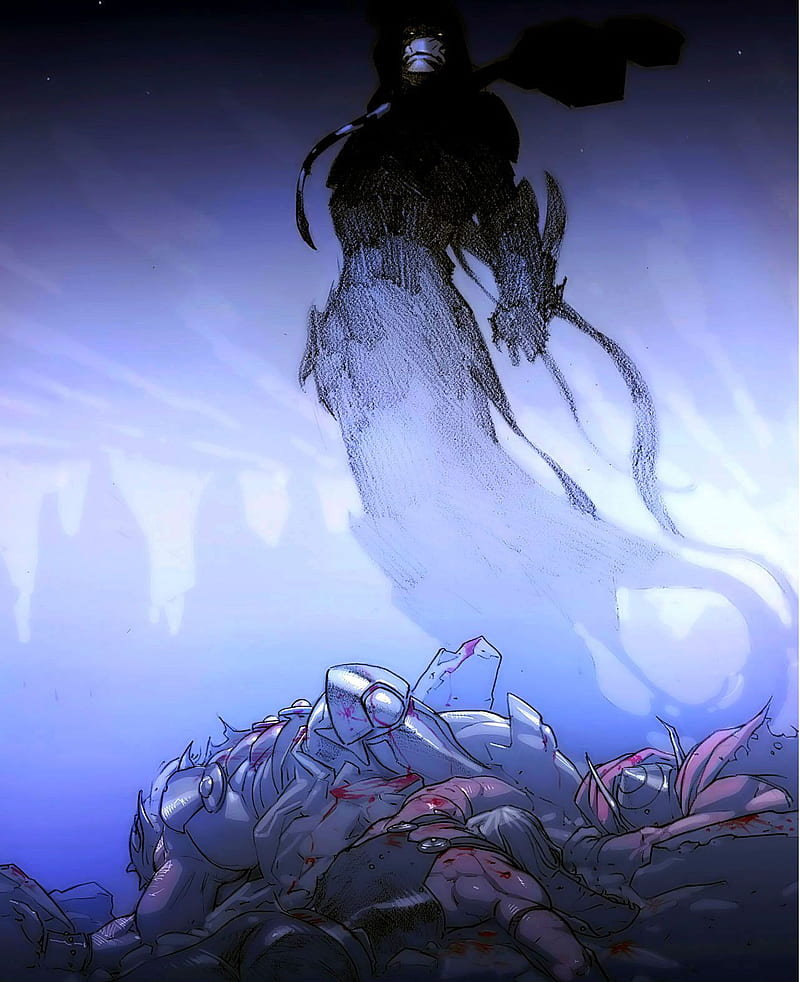
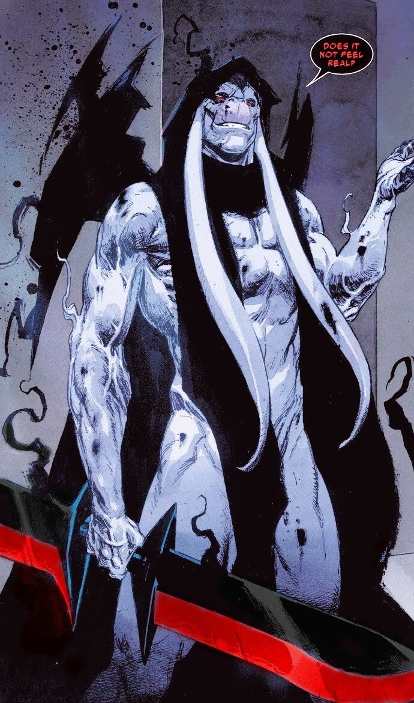
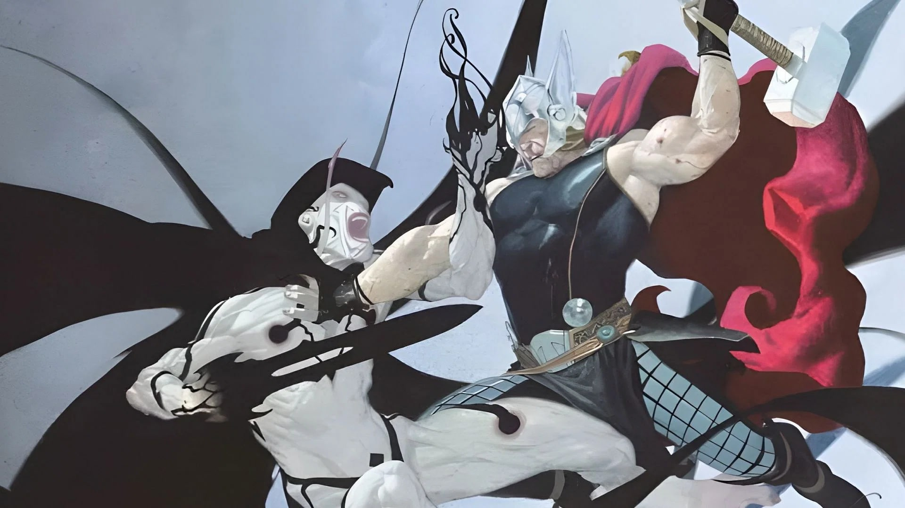
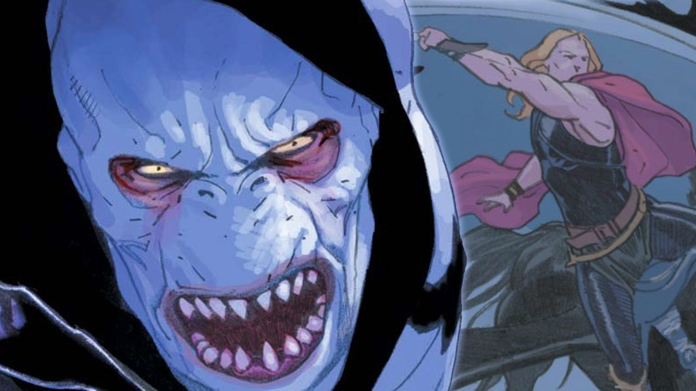
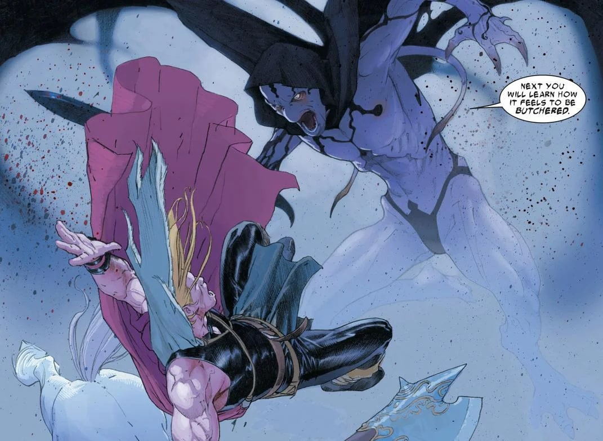

Capacités :
Sans sa Necrolame, Gorr possède une force surhumaine, ainsi qu'une endurance et une résistance extrêmes.
Il possède une longévité accrue, et peut survivre plusieurs milliers d'années.
En possession de la Necrolame, son arme symbiotique vivante, il obtient une augmentation massive de force, de vitesse et de régénération.
Il peut transformer son arme en ce qu'il désire, comme des lames, des haches, des piques, des projectiles ou encore des tentacules.
Tant qu'il est lié à la lame, il peut régénérer n'importe quelle blessure.
Il peut manipuler l'ombre et créer des créatures ou des armées entières faites d'ombre.
Apparence :
Gorr est un extraterrestre à la peau blanche, très pâle, avec un corps très maigre et décharné, lui donnant des allures de spectre.
Il ne possède pas de costume à proprement parlé, mais une simple cape noire usée, ainsi que sa Necrolame fusionnée à son propre corps.
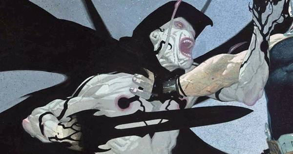
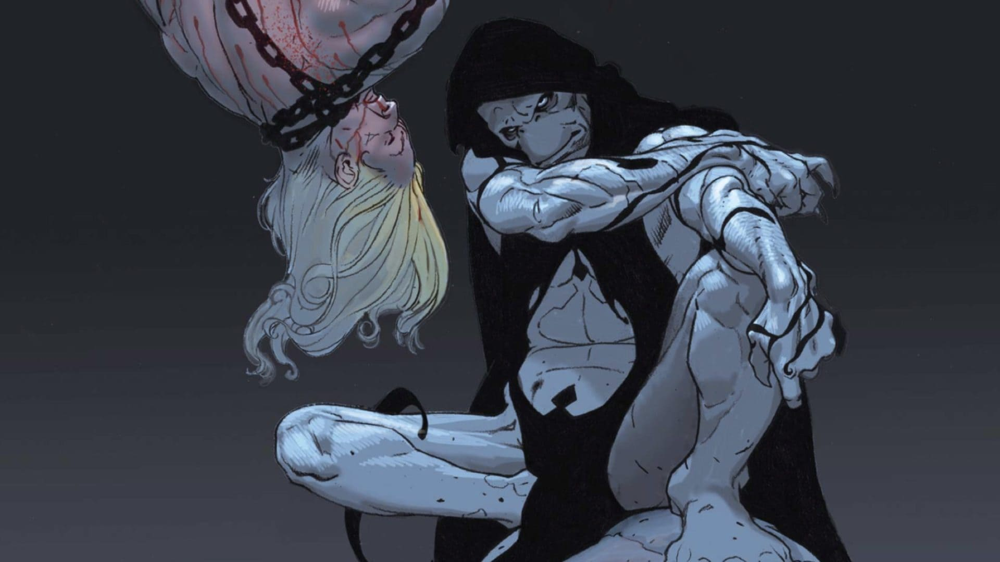